Biological Neuron
 |
| Anatomy of a multipolar neuron. |
The McCulloch-Pitts Neuron Model
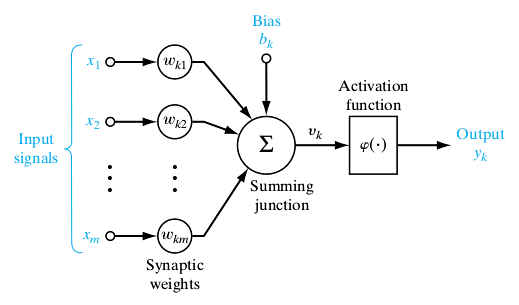 |
| McCulloch-Pitts neuron model. |
A Numerical Example
OR
The OR problem is a simple example, but it is intuitive for the first contact with artificial
neural networks. Using the MP-neuron, it is possible to solve it by choosing the following weights:
Where the bias is equal to zero and the heaviside function is used as an activation function.
Which yields a line, i.e. decision boundary, which the data below and above it belongs to the
classes 0 and 1 respectively. The figure below illustrates the situation:
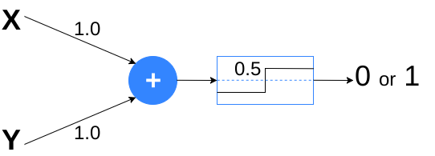 |
| OR solution. |
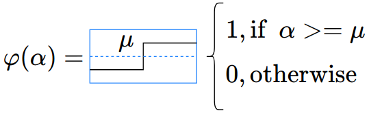 |
| Heaviside function. |
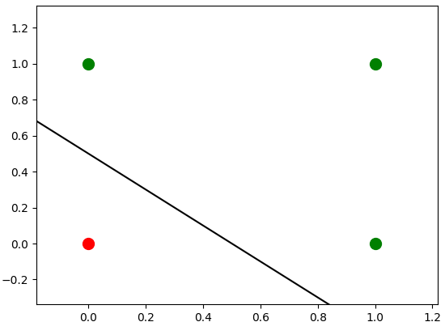 |
| Graphical solution of the OR problem. |
XOR
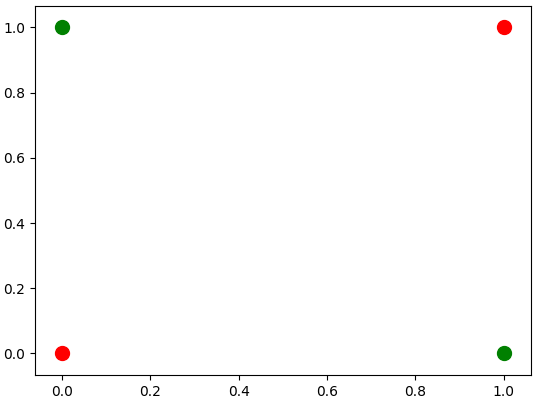 |
| XOR problem. |
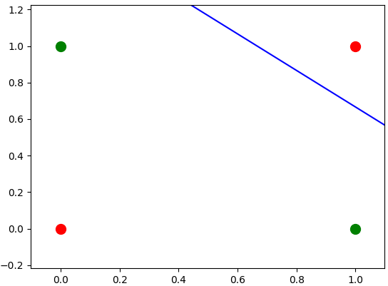 |
| Isolating the (1, 1) data. |
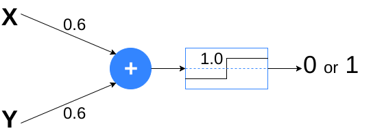 |
| MP-neuron that isolates the (1,1) data. |
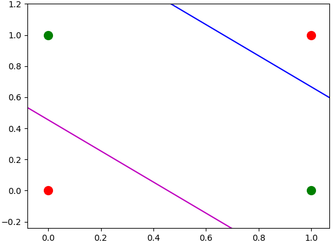 |
| Isolating the (0,0) data. |
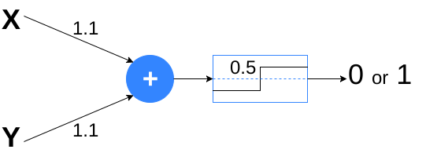 |
| MP-neuron that isolates the (0,0) data. |
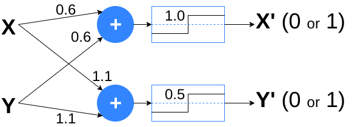 |
| Layer that maps the data to another space. |
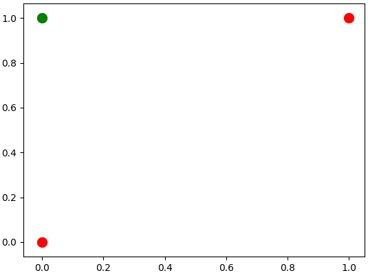 |
| Result of the mapping. |
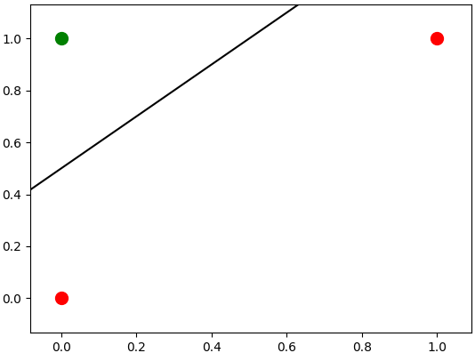 |
| Graphical solution of the XOR problem. |
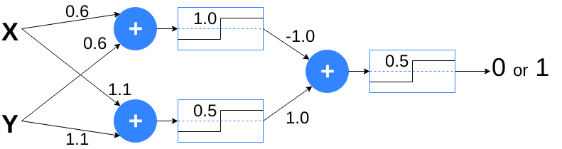 |
| XOR solution. |
Training an Artificial Neural Network with Genetic Algorithm
For this task, was trained an Artificial Neural Network (ANN) to play the
Flappy Bird
game (inspired by
this
post) and it was chosen the representation of a chromosome as
real values to represent the weights of the network.
The architecture of the neural network used is shown above, and the bird will flap or not if
the output is 1 or 0, respectively.
The X is the horizontal distance between the bird and the center of the wall and the Y is the
vertical distance between the bird and the center of the gap in the wall. The fitness used in
the genetic algorithm is the total distance traveled by the bird.
The video above was captured while training the network. To increase the difficulty over time,
the speed was increased every 10 seconds.
Checkout the code on GitHub.
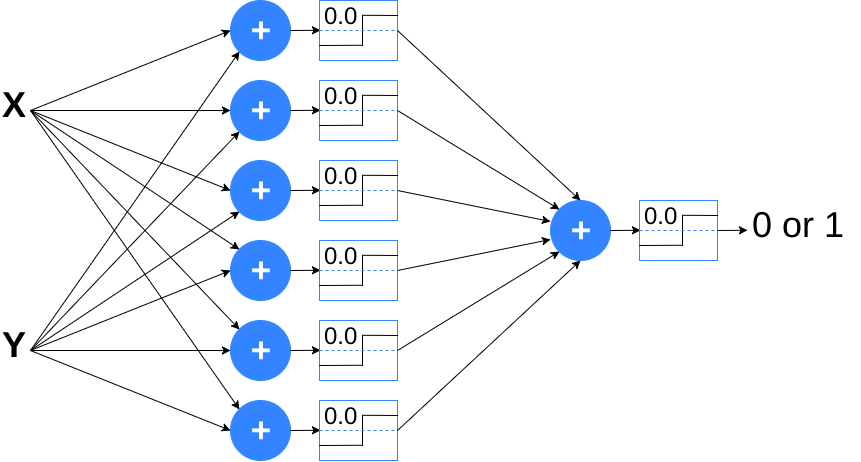 |
| Architecture of the ANN used. |
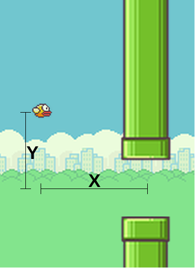 |
| Meaning of the ANN inputs. |
|
|
| Training the ANN to play the Flappy Bird game. |
Checkout the code on GitHub.
Comments